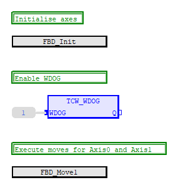
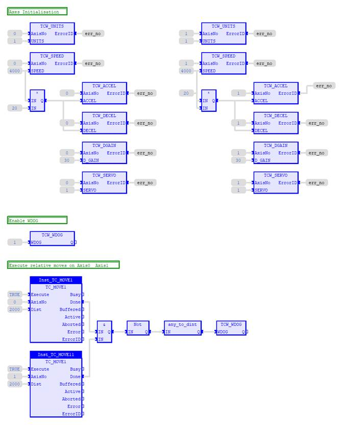
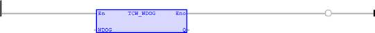
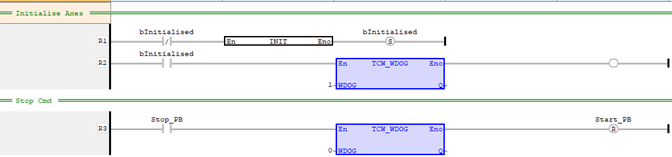
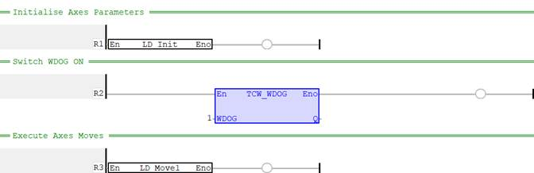
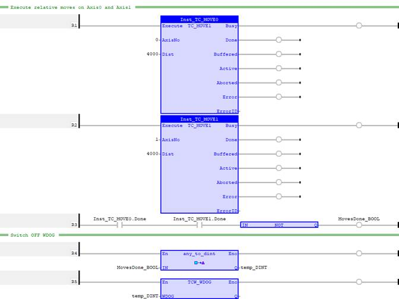

System Function
Writes to the WDOG parameter.
Please note that Input and Output data type is DINT. Zero equals to OFF. One or non-zero equals to ON.
|
WDOG : DINT; |
WDOG state |
|
Q : DINT; |
|
Sets the WDOG state.
TCW_WDOG (WDOG (*DINT*) );
Axis0 and axis1 are first set up for initial configuration. Once that done, switch WDOG ON by using the command TCW_WDOG. Move both axis 1000 units relative to current position.
// Axis 0 & 1 setup
FOR
i:=
0
TO
1
DO
TCW_UNITS
(i,
1
); // Set UNITS
TCW_SPEED
(i,
4000
); // Set SPEED
TCW_ACCEL
(i,
20
* TCR_SPEED
(
0
)); // Set ACCEL
TCW_DECEL
(i,
TCR_ACCEL
(i)); // Set DECEL
TCW_DGAIN
(i,
30
); // Set D_GAIN
TCW_SERVO
(i,
TRUE
); // Switch on SERVO
END_FOR
;
// Switch on WDOG
TCW_WDOG
(
1
);
// Move axis0 and axis1 (relative) 1000 units
Inst_TC_MOVE1_0(
TRUE
,
0
,
1000
);
Inst_TC_MOVE1_1(
TRUE
,
1
,
1000
);
Switch off WDOG when axis0 & axis1 have finished the moves
// Switch off WDOG once moves are done
IF
Inst_TC_MOVE1_0.Done
=
TRUE
AND
Inst_TC_MOVE1_1.Done
=
TRUE
THEN
TCW_WDOG
(
0
);
END_IF
;
FBD_Init is a subprogram that configure axes parameters. WDOG is switched ON before executing subprogram FBD_Move1 that handles axes moves.

Program starts with initialisation on axes parameters. Once that is set, WDOG is switched ON before continuing with axes moves.


An initialisation program is called on the first rung that sets all the axes parameter. Once initialised, WDOG is switched ON. Only when Stop push button is pressed then the WDOG is switched OFF.

Program starts with initialisation on axes parameters. Once that is set, WDOG is switched ON before continuing with axes moves.

Once axes have finished individual moves, switch WDOG OFF.
